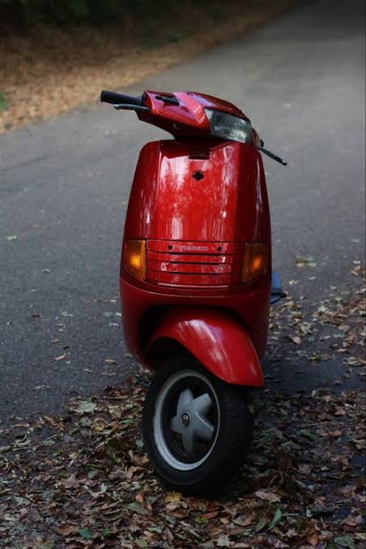
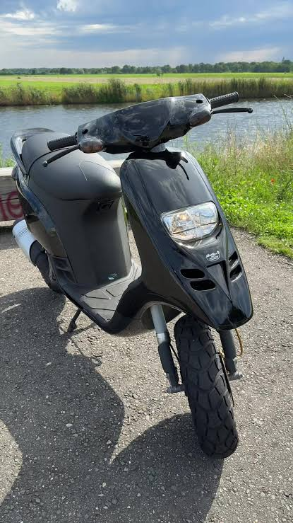

Piaggio heeft door de jaren heen veel verschillende en iconische scooters op de markt gebracht. Hieronder vind je meer informatie over een aantal van de bekendste modellen.
De Piaggio Zip is een van de meest bekende en verkochte scooters. Dankzij het lichte gewicht en het wendbare frame is deze scooter erg geliefd voor dagelijks gebruik in de stad.

De Piaggio Skipper staat bekend om zijn krachtige motor en sportieve uiterlijk. Dit model was voornamelijk in de jaren '90 erg populair als snelle motorscooter en scooter.

De Piaggio Typhoon is een robuuste scooter met een stoer ontwerp en brede banden. Hierdoor is de Typhoon uitermate geschikt voor verschillende soorten wegdekken.
